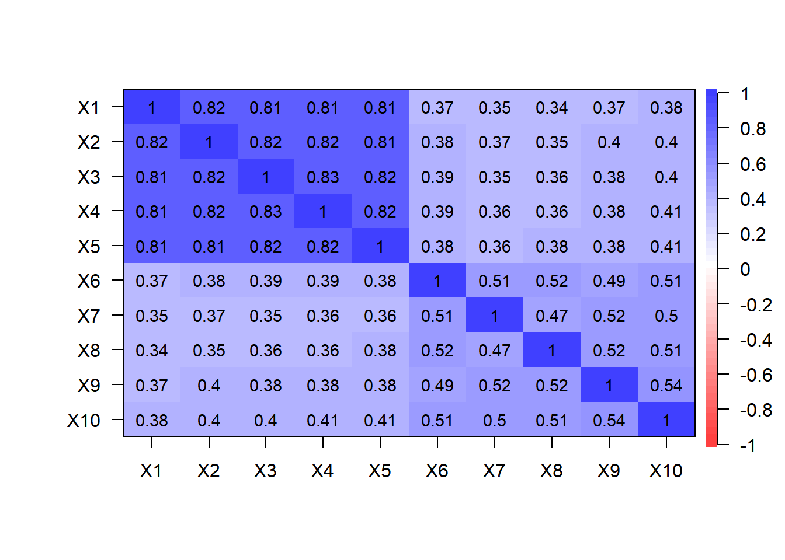
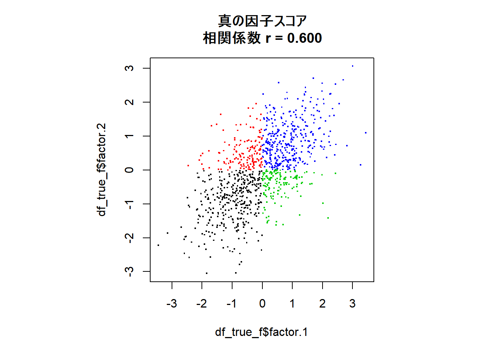
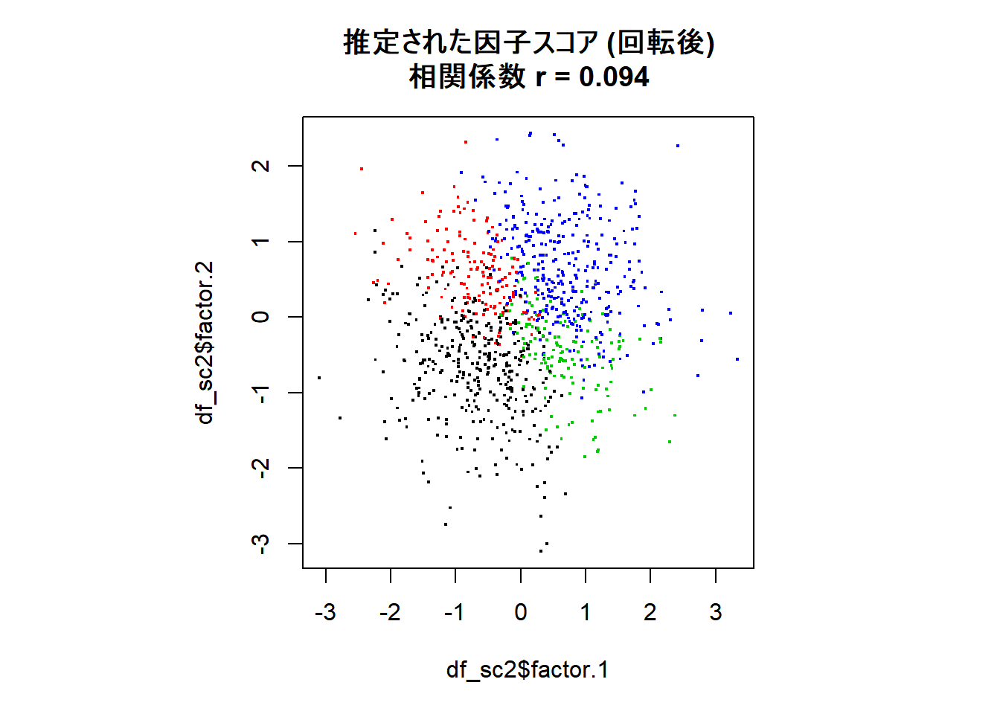

因子分析における回転の因子スコアへの影響
ここでは因子分析における，因子負荷の推定・回転，因子スコアの推定について，以下を確認します (因子スコアの推定法は，Gerlachらが使った方法と 等価であるHarmanの方法を想定します)。
因子負荷の初期解は因子スコアの推定値が無相関になるように選ばれる。
しかし，回転をした場合 (それが直交回転であっても) 因子スコアが無相関となるとは限らない。(したがって，ヌルモデルとの密度比較をする際は，因子スコアが無相関とみなせることをを確認する必要がある)
準備
必要なパッケージを読み込みます。
library(psych)
library(GPArotation)
library(mvtnorm)
library(tidyverse)データの生成
データは因子分析モデルから生成しますが， 因子\(f\)間には相関があるものとします。この仮定はそれぞれの因子は独立に標準正規分布に従う， と仮定される通常の因子分析モデルと異なります。 したがって，これは真のモデルとフィットするモデルの構造が異なる， モデルに誤設定がある例になっています (ただし，後で確認するように，この二つのモデルは表現が異なるだけで，等価な統計モデルになります)。
# 乱数のシードを設定
set.seed(1)
# サンプル数
n.sample <- 1000
p <- 10 # 項目数
# 仮想回答データを入れる変数のメモリを確保
y <- matrix(nrow = n.sample, ncol = p)
# 真の因子スコアを入れる行列のメモリを確保
tf <- matrix(0, nrow = n.sample, ncol = 2)
# 真の因子スコアの分散・共分散行列
r <- 0.6 # 因子スコア間の相関係数
Sigma <- matrix(c(1, r, r, 1), ncol = 2)
# 真の因子スコアの生成
tF <- rmvnorm(n = n.sample, mean = c(0,0), sigma = Sigma)
# 因子負荷
a1 <- c(2,2,2,2,2,0,0,0,0,0) # factor 1 項目1-5に値を持つ
a2 <- c(0,0,0,0,0,1,1,1,1,1) # factor 2 項目6-10に値を持つ
A <- cbind(a1,a2) # 行列にまとめる
# 独自因子の生成
UD <- rmvnorm(n = n.sample, mean = numeric(p), sigma = diag(p) ) # 分散は1に
# 仮想回答データの生成
y <- tF %*% t(A) + UD
# 真の因子の値を入れるデータフレーム
df_true_f <- data.frame(tF)
names(df_true_f) <- c("factor.1","factor.2")
# 観測される仮想回答データをデータフレームに格納
df_data <- data.frame(y)(参考) forループを使うと，上の仮想回答データの生成部は以下のように書けます。
for (idx in 1:n.sample) {
tF[idx,] <- rmvnorm(n = 1, mean = c(0,0), sigma = Sigma )
# 回答者idxの仮想回答データ
y[idx,] <- a1 * tf[idx,1] + a2 * tf[idx,2] +
rnorm(p, mean = 0, sd = 1) # 独自因子
}因子負荷の推定 回転なし
最尤法により因子負荷を推定します。ここでは回転は行わず，初期解を用います。
res_fa <- fa(r = df_data,
nfactors = 2, # 因子数
rotate = "none", # 回転はせず，初期解を使用
fm = "ml" # 最尤法を指定
)
# 因子スコアを推定する
# res_faでも因子スコアはres_fa$scoresとして出力されるが，
# ここはHarmanの方法を指定して改めて推定する
fsc <- factor.scores(df_data,
f = res_fa,
method = "Harman")
df_sc <- data.frame(fsc$scores)
names(df_sc) <- c("factor.1","factor.2")因子スコア間の相関を確認しておきます。
round(res_fa$r.scores,5)## ML1 ML2
## ML1 1 0
## ML2 0 1因子スコア間の相関 (対角成分) はゼロになっていることが確認できます。
因子負荷のプロット
因子負荷の初期解は以下のようになります。
cor.plot(res_fa, numbers = T)
一つ目の因子“ML1”はほぼすべての変数に対しする因子負荷が値を持っており，解釈しづらい結果になっています。そこで回転が必要になります。 なお，この行列を因子負荷\(A\)の推定値ということで\(\hat{A}\)と表します (この表記は後で用います)。
観測データの相関行列
ここでは，推定された因子分析モデルがデータの構造を 適切に表現できていることを確認します。
まず，以下で観測データの相関行列をプロットします。
cor.plot(cor(df_data), numbers = T)
因子分析では，基本的にはこのデータの相関行列を説明するように 因子負荷や独自因子などが推定されます。以下では推定されたモデルにより どのように相関行列が説明されるのか見てみます。
理論的な相関行列
推定されたモデルが出力するデータの相関行列 \(R\) は，モデルのパラメータをもとに以下で与えられます \[ R = \hat{A} \hat{A}^T + \hat{D}^2 \] \(\hat{D}^2\)は独自因子の分散・共分散行列 (独自因子間に相関はないと仮定するので，対角行列) の推定値です。 \(\cdot^T\)は行列の転置を表します。
この相関行列を実際のモデルの推定値で計算してみます。
Aest <- res_fa$loadings
D2est <- diag(1 - res_fa$communalities)
R <- Aest %*% t(Aest) + D2est
cor.plot(R, numbers = T)上で見た観測データの相関行列とよく一致していることが確認できます。 上述のようにフィットしているモデルの構造は 真のモデルとは異なっているのですが， 出力されるデータの相関行列は真のモデルとほぼ同じものになっています。 これは，因子間の相関が生み出す変数間の相関を，代わりに因子負荷を調整することで表現できるためです。この点は，この後見るように，回転させた因子負荷行列からよりはっきりします。
因子負荷の推定 バリマックス回転
以下では最尤法により因子負荷を推定しています。 また，バリマックス回転で因子負荷の直交回転を行っています。
res_fa2 <- fa(r = df_data,
nfactors = 2, # 因子数
rotate = "varimax", # 回転法はvarimaxを指定
fm = "ml" # 最尤法を指定
)
fsc2 <- factor.scores(df_data,
f = res_fa2,
method = "Harman")
df_sc2 <- data.frame(fsc2$scores)
names(df_sc2) <- c("factor.1","factor.2")因子負荷のプロット
cor.plot(res_fa2, numbers = T)回転前より解釈しやすい形になりました。 ただし，データ生成に用いた真のモデルの因子負荷と異なり， いずれの因子もすべての変数に値を持っています (因子ML1も，変数X1-X5だけでなく，X6-X10にも値を持っています)。 これにより，真のモデルに含まれていた 因子間の相関と同じ効果が得られます。
理論的な相関行列
回転前と同様に，モデルが生成するデータの相関行列をプロットしてみます。
Aest <- res_fa2$loadings
D2est <- diag(1 - res_fa2$communalities)
R <- Aest %*% t(Aest) + D2est
cor.plot(R, numbers = T)
回転してもモデルが生成するデータの相関行列は変わらない，つまり 因子分析モデルは回転に対して不変 (回転に関して不定性がある)，ということが確認できました。
推定された因子スコアの比較
最後に，回転の様子が分かりやすいよう真の因子の象限別に色分けして， 真の因子スコア，回転前の因子スコア，回転後の因子スコアの散布図をプロットして比較します。相関係数も図のタイトルに表します。 
回転前は因子スコア間の相関はゼロに近くなるよう推定されていますが，回転後は弱いながらも正の相関が見られます。
モデルの設定上は，因子は互いに無相関であると仮定されるのですが，回転をした後に実際のデータから推定される因子スコアは必ずしも無相関とはならないということが確認できました。
Anderson and Rubinの方法を用いる
このページでは， 因子スコアの推定法としてHarmanの方法を用いていましたが， 推定される因子スコアが無相関になるような制約をかけた 推定法も存在します。Anderson and Rubinの方法がそれです (参照: 豊田「因子分析入門」p.174)。 以下では上で作ったデータ (バリマックス法で回転した解) に対して その方法を用いて因子スコアの推定をしてみます。
# Anderson and Rubinの方法による因子スコア推定
fsc3 <- factor.scores(df_data, f = res_fa2, method = "Anderson")
df_sc3 <- data.frame(fsc3$scores)
names(df_sc3) <- c("factor.1","factor.2")
par(pty = "s")
plot(df_sc3$factor.1, df_sc3$factor.2, pch=".",
cex = 2,col = df_true_f$orth,
main = sprintf("推定された因子スコア (Anderson and Rubinの方法)\n相関係数 r = %.3f",
cor(df_sc3$factor.1, df_sc3$factor.2))
)確かに因子スコア間の相関がゼロになりました。 Gerlachらのような分析をする際は，因子スコア間の相関は ゼロにしておくのが望ましいと考えられるので， はじめからこちらの方法を使うのがよいかもしれません。
GerlachらがHarmanの方法を使ったのには特別な理由はなく， 使われたライブラリで採用されていたためかと思います。 そこではHarmanの方法とは明記されていないのですが， 使われた機械学習ライブラリscikit-learnの マニュアルをでは因子スコア推定法としてBishipのPRMLが参照されており，その方法はHarmanの方法と等価なもののようです。